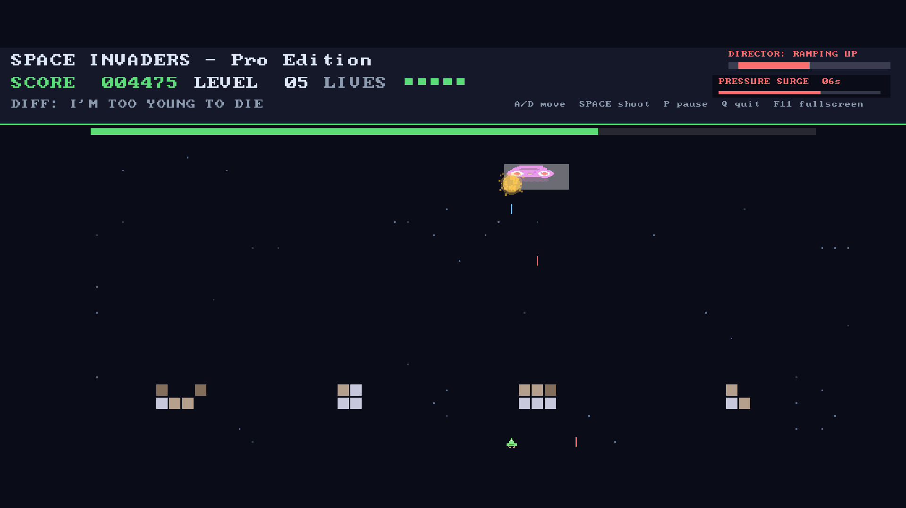
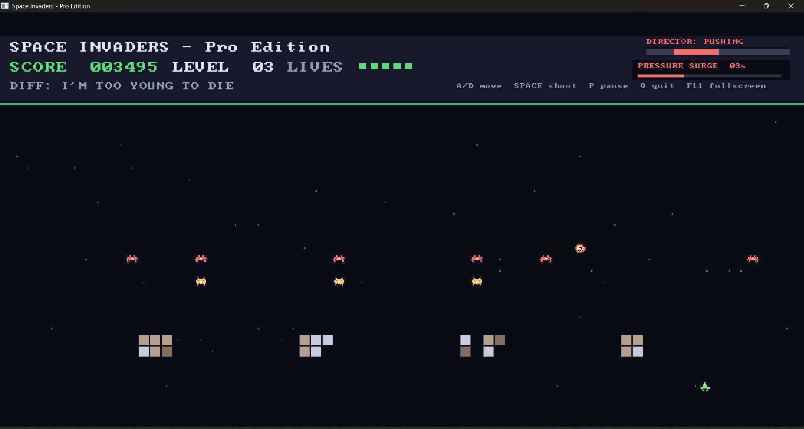
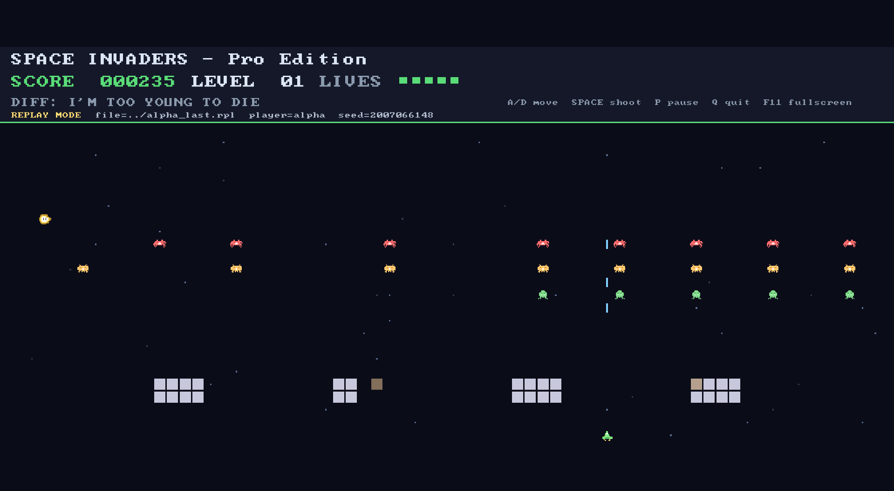
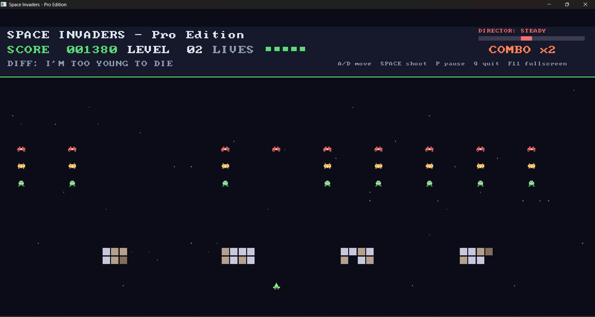
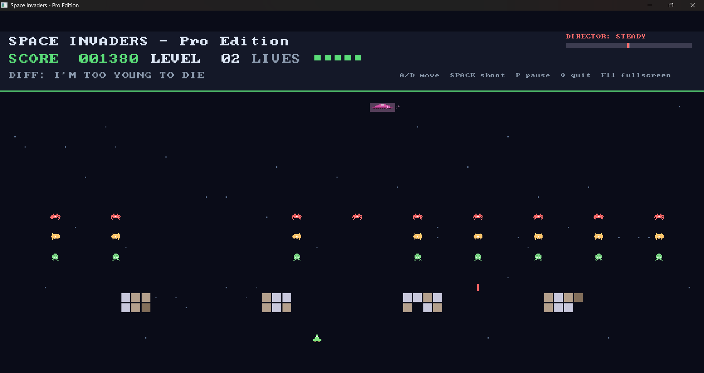
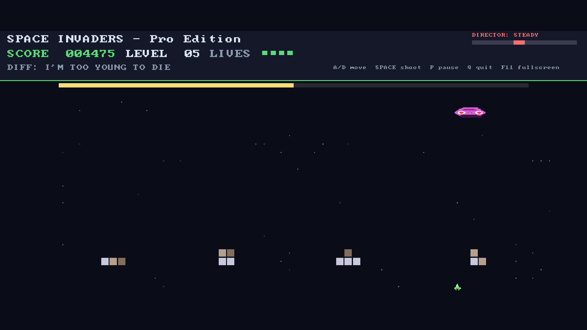

Director AI
The game tracks how the run is going and can ease up or push harder. The HUD shows the current Director state during play.
C++ arcade project
I started this as my final-year college project. I kept working on it because the game was a good place to build systems I wanted to learn: replays, boss waves, co-op, a Director, and a windowed renderer.
This is a small arcade game that grew out of a college project. The current goal is simple: make it playable, keep the code easy to test, and improve it without pretending it is bigger than it is.
Run it locallyDemo
The video shows the windowed build running. The screenshots below show normal waves, replay playback, Director state, and boss fights.
Features
The game tracks how the run is going and can ease up or push harder. The HUD shows the current Director state during play.
Runs can be saved and played back later. This is useful for watching a run again and for checking bugs.
Boss encounters break up the normal wave rhythm. They give the run a clear change of pace.
Keyboard, AI, replay, and co-op all feed the same game code. That keeps the main rules easier to test.
Screenshots






Controls
Play the windowed build first. The terminal version is still useful for replay checks, tools, and quick development runs.
Download / build
Releases are the download entry point. If a package is not available for your system yet, build it locally from the platform notes.
How it works
The game rules live in one simulation. Input sources send actions into it. Rendering and audio read the result.
Player, aliens, bullets, powerups, bosses, scoring, and lives.
Keyboard, replay, AI, and co-op all use the same game path.
Saved input frames make playback possible.
Sprites, particles, audio, menus, and HUD feedback sit on top.
Development journey
I originally built this as my final-year college project. At first, the goal was just to get the arcade loop working. Later I added tests, replays, a windowed build, co-op, and better project structure.
Some parts are still rough. Some systems are older than others. I am keeping the project moving by improving one piece at a time.
Roadmap
Contribute
Good areas to help: packaging, Linux/macOS checks, replay tooling, tests, website media, accessibility, controller input, and clear docs.